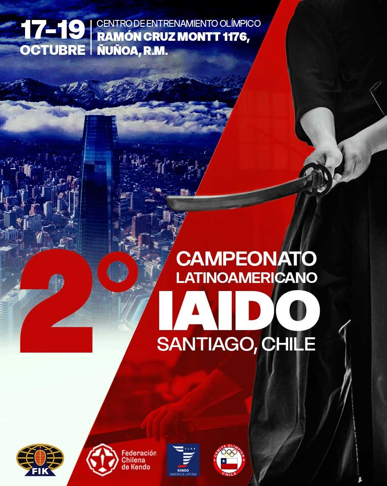

-
Primeiro brasileiro a alcançar o 7º Dan em Iaido
.jpg)
02/03/2025
No dia 02 de março de 2025, em Quioto, o Sensei Alexandre Pereira, Muso Jikiden Eishin Ryu, é o brasileiro com a maior graduação (Renshi 7º Dan) pela Federação Japonesa de Kendo (Zen Nihon Kendo Renmei - ZNKR). Um marco significativo para as artes marciais e o Iaido no Brasil. A conquista, que exige anos de dedicação, habilidade e conhecimento profundo, consolida a posição do Sensei Alexandre como um respeitado expoente da modalidade, sendo o primeiro brasileiro a alcançar esse patamar. O feito foi celebrado por seus alunos e colegas.
-
1° Gasshuku da Genbukan Brasil 22/08/2025 a 24/08/2025 - São Carlos, São Paulo

31/08/2025
Este primeiro evento oficial da Genbukan Brasil teve por objetivo o aprofundamento e aprimoramento técnico do Muso Jikiden Eishin Ryu da linhagem de Oshita Masakazu Sensei, Kyoshi 8º Dan, e contou com a presença orientação técnica direta de seu aluno Alexandre Pereira Sensei, Renshi 7º Dan, o primeiro brasileiro a obter Nanadan (7º Dan) em Iaido. A enorme dedicação, prestatividade e atenção de Alexandre Pereira Sensei tornou esse Gasshuku um evento único, uma oportunidade excepcional de aprendizado, desenvolvimento e o polimento técnico de todos os participantes...
-
2º Campeonato Latinoamericano de Iaido 17/10/2025 a 19/10/2025 - Santiago, Chile
11/08/2025
O 2° Campeonato Latino-americano de Iaido, da Confederação Latino-americana de Kendo (CLAK), será realizado em Santiago, Chile, nos dias 17 a 19 de outubro de 2025, organizado pela Federação Chilena de Kendo (FECHKEN)...